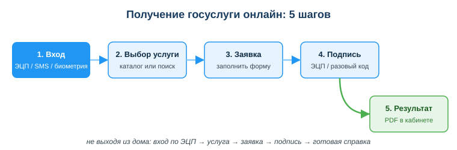
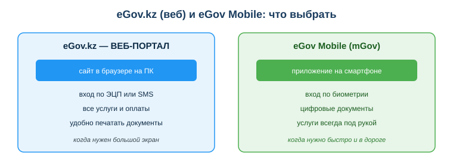

Расширенный учебный материал по теме
Занятие 14. Использовать портал eGov.kz и mGov: получение госуслуг
Дисциплина: Применение информационно-коммуникационных и цифровых технологий
Результат обучения: РО 2.2 — использование услуг веб-порталов и цифровых сервисов · Объём темы: 2 часа
Квалификация: 4S06130103 «Разработчик программного обеспечения»
Представь вечер воскресенья. Тебе срочно нужна адресная справка — её требует комендант общежития, а заселяться надо завтра утром. ЦОН (Центр обслуживания населения) уже закрыт, и ближайшая возможность попасть туда — понедельник, к самому открытию, в очередь. Старый сценарий: ты теряешь утренние пары, едешь через весь город, берёшь талон, ждёшь, получаешь бумажку. День потрачен.
Новый сценарий занимает две минуты. Ты открываешь на телефоне приложение eGov Mobile, входишь по отпечатку пальца, в поиске набираешь «адресная справка», подтверждаешь заявку одноразовым кодом из SMS — и скачиваешь готовый PDF-документ с защитным QR-кодом. Справка юридически действительна, её можно отправить коменданту прямо из телефона. Никакой очереди, никакого ЦОНа, никаких потерянных пар.
Разница между этими двумя сценариями — и есть смысл темы. Уметь получать госуслуги онлайн сегодня так же базово, как уметь оплачивать покупки картой. Это навык цифрового гражданина Казахстана. Но для тебя как будущего разработчика здесь есть и второй слой. eGov.kz и eGov Mobile — это не «сайт с кнопками». Это огромная информационная система: она опознаёт пользователя (идентификация), даёт ему юридически подписать действие (электронная подпись), хранит каталог из сотен услуг, связывается с десятками государственных баз данных и выдаёт результат в личный кабинет. Всё это — те самые архитектурные элементы, которые ты будешь проектировать в собственных приложениях [4; 9].
Поэтому смотри на тему двумя глазами сразу. Один глаз — пользователя: как мне быстро и безопасно получить услугу. Второй глаз — инженера: как это вообще работает и почему сделано именно так. Этот двойной взгляд и отличает специалиста от просто пользователя.
После изучения темы ты сможешь:
Начнём с самого понятия. Электронное правительство (electronic government, eGov) — это способ получать государственные услуги через интернет: ты подаёшь заявку онлайн, подтверждаешь её электронной подписью и получаешь готовый результат в личный кабинет, не приходя физически в госорган [9]. Самая короткая формула: eGov переносит окно ЦОНа к тебе в браузер и смартфон.
Зачем государству это понадобилось? Вспомни старый порядок: за любой справкой надо было лично прийти в учреждение, отстоять очередь, иногда несколько раз (сначала подать, потом забрать). Это тратило время миллионов людей и самих чиновников. Электронное правительство решает сразу несколько задач: экономит время граждан, снижает нагрузку на ЦОНы, уменьшает коррупционные риски (нет личного контакта — некому «помогать за вознаграждение»), делает услуги доступными круглосуточно и из любой точки, в том числе из села, где нет крупного ЦОНа.
Здесь важно увидеть связь с предыдущей темой курса — цифровой трансформацией. Электронное правительство — это не просто «оцифрованная очередь». Это перестройка самого процесса оказания услуги. Раньше человек шёл к данным (приезжал туда, где лежит его дело). Теперь данные идут к человеку (услуга приходит в его кабинет). Государственную политику в этой сфере в Казахстане задаёт Закон РК «Об информатизации» от 24.11.2015 № 418-V [2] — именно он создаёт правовую основу для электронных госуслуг, государственных баз данных и их взаимодействия.
Полезная аналогия. Представь, что раньше, чтобы узнать баланс, ты ездил в отделение банка. Сегодня баланс ты видишь в приложении за секунду. eGov сделал с государством то же самое, что банковские приложения сделали с банками: вынес услугу в твой телефон.
Многие путаются: «eGov — это сайт или приложение?» Правильный ответ — и то, и другое; это два разных интерфейса к одной и той же системе госуслуг. Чтобы выбрать правильный инструмент под задачу, разбери схему «eGov.kz и eGov Mobile: что выбрать» (приложение Б) и таблицу ниже.
| Признак | eGov.kz (веб-портал) | eGov Mobile / mGov (приложение) |
|---|---|---|
| Где работает | браузер на компьютере | смартфон (Android / iOS) |
| Главное удобство | большой экран, легко печатать документы | всегда под рукой, быстрый вход по биометрии |
| Вход | ЭЦП, SMS-пароль (логин/пароль) | биометрия (отпечаток / лицо), SMS, ЭЦП |
| Особые возможности | полный каталог услуг, удобная печать | цифровые документы (удостоверение личности, дипломы), push-уведомления |
| Когда удобнее | дома за компьютером, нужно распечатать | срочно, в дороге, «здесь и сейчас» |
eGov.kz — это единый портал электронного правительства РК. Он удобен на ПК: большой экран помогает заполнять длинные формы, а готовую справку легко сразу распечатать. Здесь же доступен полный каталог услуг по разделам (для граждан, для бизнеса, для семьи и т. д.).
eGov Mobile (mGov) — мобильное приложение с тем же набором услуг плюс важные «мобильные» функции. Во-первых, цифровые документы: приложение показывает твоё удостоверение личности, водительские права, дипломы — их юридически принимают вместо пластиковых карточек во многих ситуациях. Во-вторых, биометрический вход — по отпечатку пальца или лицу, что и быстро, и безопаснее ввода пароля. В-третьих, push-уведомления: приложение само сообщит, что справка готова или пришёл налог.
Практический вывод: для срочной разовой справки в дороге выбирай приложение; для сложной заявки, которую нужно внимательно заполнить и распечатать, — портал на компьютере. Учиться стоит обоим — это один и тот же логин и одни и те же услуги.
Взгляд разработчика. Обрати внимание на сам приём: одна система — несколько клиентов (веб и мобильный). Это базовый архитектурный паттерн. Логика услуг, базы данных, проверка подписи живут на сервере (в «бэкенде»), а портал и приложение — это лишь разные «витрины» (клиенты, «фронтенд») к одному ядру. Поэтому услуги в вебе и в приложении совпадают: они берутся из одного источника. Когда ты будешь проектировать своё приложение с сайтом и мобильной версией, ты применишь ровно этот подход.
Вход — первый и критически важный шаг. От того, как именно ты вошёл, зависит, какие действия тебе разрешат и насколько ты защищён. В eGov есть три основных способа входа, и у каждого своя роль.
1. SMS-пароль (вход по логину и одноразовому коду). Самый простой способ: ты указываешь ИИН и получаешь одноразовый код в SMS на телефон, привязанный к мобильной базе граждан. Это удобно для входа и получения простых справок. Минус: телефон можно потерять или SIM-карту перевыпустить мошенническим путём, поэтому для самых ответственных действий одного SMS бывает недостаточно.
2. ЭЦП (электронная цифровая подпись). Это файл-ключ (или ключ на специальном носителе), который криптографически подтверждает: действие совершил именно ты. ЭЦП придаёт заявке юридическую силу — то есть подписанный ею документ равнозначен подписанному рукой [15]. ЭЦП нужна для юридически значимых действий: регистрация бизнеса, подача отчётности, сделки. Подробно работу с ЭЦП и программой NCALayer ты разберёшь в занятии 15; здесь важно запомнить роль: ЭЦП — это твоя «электронная рука», которой ты подписываешь.
3. Биометрия (отпечаток пальца или распознавание лица). Доступна именно в приложении eGov Mobile. Удобнее всего: приложил палец — вошёл. С точки зрения безопасности это сильный способ, потому что биометрия привязана к конкретному устройству и к тебе лично. Именно поэтому в истории из введения студент вошёл «по отпечатку» за секунду. Но запомни важную оговорку: биометрия лишь разблокирует приложение (заменяет ввод пароля при входе). Само юридически значимое действие — подачу заявления, заказ услуги — подтверждает уже подписание. Для физлиц основной способ подписания в 2025–2026 годах — мобильное QR-подписание через eGov Mobile: на портале появляется QR-код, ты сканируешь его камерой в приложении и подтверждаешь подпись PIN-кодом или биометрией; файл-ключ ЭЦП и установка NCALayer при этом не нужны.
Когда какой способ выбрать — короткое правило:
| Ситуация | Рекомендуемый способ входа |
|---|---|
| Быстро получить простую справку в дороге | биометрия (в приложении) |
| Вход с компьютера для простой услуги | SMS-пароль |
| Юридически значимое действие (бизнес, отчётность, сделка) | ЭЦП |
Ключевая мысль: способ входа должен соответствовать важности действия. Чем серьёзнее последствия, тем сильнее должно быть подтверждение личности. Это общий принцип безопасности, который ты как разработчик будешь закладывать в собственные системы.
Это сердце темы. Любая услуга на eGov проходит по одному и тому же маршруту из пяти шагов. Разбери схему «Получение госуслуги онлайн: 5 шагов» (приложение А) и пройди каждый шаг подробно.

Шаг 1. Войти. Ты входишь в систему одним из способов из раздела 4.3 — ЭЦП, SMS-паролем или (в приложении) биометрией. После входа ты попадаешь в личный кабинет: система уже знает, кто ты, и привязывает к тебе все дальнейшие действия. Здесь же видны твои прошлые заявки и уведомления.
Шаг 2. Найти услугу. Услугу можно найти двумя путями: через каталог (услуги сгруппированы по жизненным ситуациям и категориям — «Семья», «Гражданство», «Бизнес», «Транспорт» и т. д.) или через поиск (вводишь название, например «адресная справка», и портал находит услугу). Поиск быстрее, когда ты точно знаешь название; каталог удобнее, когда ты не уверен, как услуга называется официально.
Шаг 3. Заполнить заявление. Открыв услугу, ты заполняешь форму. И вот важный момент, который отличает eGov от обычного сайта: часть данных подтягивается автоматически из государственных баз. Твоё ФИО, ИИН, иногда адрес система уже знает и подставляет сама — потому что услуга обращается к базам данных (регистр населения, адресный регистр и др.). Тебе остаётся указать только то, чего система не знает (например, цель справки или конкретный период). Это экономит время и снижает число ошибок.
Шаг 4. Подписать. Заполненную заявку нужно подтвердить — подписать. Для простых справок достаточно одноразового кода (SMS), для юридически значимых действий нужна ЭЦП. Для физлица подписать ЭЦП проще всего через мобильное QR-подписание: портал показывает QR-код, ты сканируешь его в eGov Mobile и подтверждаешь подпись PIN-кодом или биометрией (без файла-ключа и без NCALayer; NCALayer остаётся для десктоп-сценариев). Именно на этом шаге заявка превращается из черновика в юридически значимый документ: ты официально заявил государству о своём запросе и подтвердил, что это именно ты.
Шаг 5. Получить результат. Готовый документ приходит в личный кабинет — обычно в виде PDF-файла с защитным QR-кодом. Его можно скачать, переслать, распечатать. Время ожидания зависит от услуги: простые справки выдаются почти мгновенно (данные берутся из базы), более сложные — за часы или дни (требуется обработка ведомством).
Сведём маршрут в одну строку, которую стоит запомнить наизусть:
Сквозной пример: адресная справка за 2 минуты. Проследи историю студента из введения по всем пяти шагам. (1) Войти: открыл eGov Mobile, приложил палец — вошёл по биометрии. (2) Найти: в поиске набрал «адресная справка», выбрал услугу. (3) Заполнить: ФИО и ИИН подтянулись автоматически, он указал только цель — «для общежития». (4) Подписать: получил SMS с кодом, ввёл — заявка подписана. (5) Получить: через несколько секунд в кабинете появился PDF с QR-кодом, он скачал его и отправил коменданту. Пять шагов, две минуты, ноль очередей.
Чтобы алгоритм не остался абстрактным, посмотри, какие конкретные услуги ты можешь получить. Их сотни, но вот самые частые для студента и будущего специалиста:
| Услуга | Зачем нужна | Чем обычно подписывается |
|---|---|---|
| Адресная справка (о регистрации по месту жительства) | заселение в общежитие, оформление документов | SMS-код |
| Справка об отсутствии судимости | трудоустройство, виза, некоторые конкурсы | ЭЦП или SMS-код |
| Справка о пенсионных отчислениях | подтверждение стажа и доходов | SMS-код |
| Регистрация ИП (индивидуального предпринимателя) | начать своё дело, легально работать как фрилансер | ЭЦП (юридически значимо) |
| Запись в очередь / получение талона | планово посетить госорган без живой очереди | вход без подписи |
| Оплата налогов и штрафов | погасить задолженность онлайн | подтверждение оплаты |
Отдельно отметь логику: чем серьёзнее юридические последствия услуги, тем чаще требуется именно ЭЦП. Регистрацию ИП ты подпишешь ЭЦП (ты создаёшь юридически значимый статус), а простую адресную справку — SMS-кодом.
Чего на eGov нет. Важно понимать границы портала. eGov — это услуги (то, что государство делает по твоей заявке). Но за текстами законов идти нужно не на eGov, а в справочно-правовую систему «Әділет» (adilet.zan.kz) [16] — это другой ресурс, его ты разберёшь в занятии 16. Налоговый кабинет с детальной отчётностью — это cabinet.salyk.kz, лицензии — eLicense.kz. eGov — главный вход, но часть специализированных задач решается на смежных порталах. Не путать «получить услугу» и «прочитать закон».
Это раздел, ошибка в котором стоит дороже всего. Когда ты работаешь с госуслугами, на кону твои персональные данные и электронная подпись. А значит, тобой интересуются мошенники.
Что такое сайт-двойник (фишинг). Мошенники создают поддельный сайт, внешне неотличимый от настоящего eGov, но с похожим, но другим адресом — например, egov-services.ru, egov-kz.com, e-gov.kz или адрес с подменённой буквой. Ты вводишь там логин, пароль, а иногда и загружаешь файл ЭЦП — и всё это уходит прямо к преступнику [8].
Почему это опасно именно с ЭЦП. Если у мошенника окажется твоя электронная подпись и пароль к ней, он сможет действовать от твоего имени юридически: зарегистрировать на тебя фирму-однодневку, оформить кредит, подписать договор, подать ложную отчётность. Это не «украли пароль от соцсети» — это украли твою юридическую руку. Последствия могут тянуться годами.
Как мошенники заманивают. Чаще всего через сообщения: SMS или письмо вроде «eGov: ваша справка готова, заберите по ссылке» или «обнаружена задолженность, оплатите срочно». В сообщении — ссылка на сайт-двойник. Расчёт на спешку и невнимательность: ты торопишься и кликаешь, не глядя на адрес.
egov.kz вручную в адресной строке, или через официальное приложение eGov Mobile из App Store / Google Play;egov.kz, а не «похожий» домен (egov-services.ru, egov-kz.com и подобные — поддельные);https:// и значок замка), но помни: замок есть и у некоторых поддельных сайтов, поэтому главное — правильный домен, а не только замок;Как отличить настоящий адрес от поддельного — разбор:
| Адрес | Настоящий? | Почему |
|---|---|---|
egov.kz |
да | официальный домен в зоне .kz |
egov-services.ru |
нет | чужая доменная зона .ru, дефис, лишнее слово |
egov-kz.com |
нет | зона .com, домен не egov.kz, а «egov-kz» |
e-gov.kz |
нет | лишний дефис внутри имени — другой домен |
Взгляд разработчика. Подумай, как защититься на уровне системы. В приложении и на портале применяют: проверку домена и сертификата, привязку входа к устройству (биометрия), одноразовые коды (двухфакторная аутентификация), а ЭЦП построена на криптографии, которую почти невозможно подделать. Когда ты сам будешь делать вход и подпись в своём приложении, эти приёмы — твой обязательный минимум. Связь с законом: защита персональных данных пользователей — не пожелание, а требование Закона РК «О персональных данных и их защите» от 21.05.2013 № 94-V [3].
Получить справку — половина дела. Прежде чем отправлять её куда-либо, нужно её проверить. Это касается и корректности данных, и подлинности документа.
Проверь корректность данных. Открой PDF и сверь:
Если что-то неверно (например, устаревший адрес), не отправляй документ — сначала разберись с источником ошибки: возможно, данные в базе не обновлены, и надо подать заявление на корректировку.
Проверь подлинность. Электронная справка снабжена QR-кодом и/или уникальным номером. Через них принимающая сторона (или ты сам) может онлайн проверить, что документ действительно выдан системой, а не подделан в графическом редакторе. Это и есть преимущество электронного документа над бумажным: подлинность проверяется машиной за секунду.
Мини-алгоритм проверки:
Этот шаг легко пропустить «потому что всё ведь автоматически». Но именно невнимательность к данным приводит к тому, что человек отправляет справку со старым адресом и получает её обратно. Автоматизация уменьшает ошибки, но не отменяет твоей ответственности проверить итог.
Этот раздел — про второй глаз, инженерный. Разбери eGov как систему, которую кто-то спроектировал, и увидишь знакомые компоненты.
Зачем тебе это сейчас? Чтобы ты увидел: то, чем ты пользуешься как гражданин, собрано из тех же кирпичей, которые тебе предстоит укладывать как инженеру. Когда в будущем тебе скажут «сделай вход пользователя, каталог и личный кабинет», у тебя уже будет рабочий образец перед глазами — eGov.
eGov — центральный, но не единственный государственный портал. Полезно держать в голове карту смежных сервисов, чтобы знать, куда идти за чем:
Все они связаны общей идеей электронного государства, разделяют механизмы идентификации и ЭЦП, но решают разные задачи. Умение быстро понять, на какой портал идти за конкретной задачей, — практический навык цифрового гражданина и специалиста.
Пример 1 — срочная адресная справка (полный разбор алгоритма). Воскресенье, нужна справка к утру. Разбор по шагам: вход по биометрии в eGov Mobile (4.3); поиск «адресная справка» (4.4, шаг 2); ФИО и ИИН подтянулись из базы, указана только цель (шаг 3); подпись SMS-кодом — справка стала юридически значимой (шаг 4); PDF с QR пришёл в кабинет (шаг 5). Перед отправкой коменданту студент сверил адрес и срок действия (4.7). Итог: две минуты вместо потерянного дня. Это эталонное прохождение всей темы.
Пример 2 — письмо от «двойника» (безопасность). Студент получает SMS: «eGov: ваша справка готова, заберите — egov-services.ru». Разбор: это фишинг (4.6). Признаки: пришло ссылкой; домен egov-services.ru в зоне .ru с лишним словом — поддельный. Правильно: не переходить; зайти на egov.kz вручную или открыть приложение и проверить там. Если перейти и ввести данные ЭЦП — мошенник сможет действовать от твоего имени юридически.
Пример 3 — «не та услуга» (границы eGov). Студенту для доклада нужен текст Закона РК «Об информатизации». Он ищет его на eGov и не находит. Разбор: eGov выдаёт услуги, а тексты законов живут в системе «Әділет» (adilet.zan.kz) [16]. Регистрация ИП и справка о несудимости — услуги eGov, а закон — это Әділет. Урок: различай «получить услугу» и «прочитать норму» (4.5).
Пример 4 — ошибка в полученной справке (проверка результата). Студент скачал адресную справку и сразу переслал, не открыв. Принимающая сторона вернула её: в справке старый адрес — он недавно переехал, а база не обновлена. Разбор: пропущен шаг проверки результата (4.7). Правильно — открыть PDF, сверить ФИО, ИИН, адрес, срок действия и только потом отправлять; при устаревших данных сначала подать на их корректировку.
egov.kz вручную или открывай официальное приложение из магазина.egov.kz вручную или через официальное приложение (не по ссылке);egov.kz вручную или через приложение, никогда не переходи по ссылкам и береги ЭЦП.Основная и дополнительная литература:
Нормативные источники РК:
Электронные ресурсы (официальные порталы РК):
Международные рамки:
Нумерация ссылок в тексте раздела 4 приведена по уроку (urok.md) и сквозному списку курса: [2] и [3] — законы РК «Об информатизации» и «О персональных данных»; [8] — материалы по сетевым угрозам и фишингу (занятие 08); [9] — портал eGov.kz; [15], [16] — занятия об ЭЦП и системе «Әділет». В данном разделе источников те же ресурсы перечислены полными реквизитами и ссылками.
assets/14_shema-poluchenie-uslugi.svg. Читай слева направо: вход (ЭЦП / SMS / биометрия) → выбор услуги → заявка → подпись → результат (PDF в личном кабинете). Обрати внимание, что юридически значимым документ становится на шаге подписи.assets/14_shema-egov-veb-vs-mobile.svg. Слева — веб-портал (ПК, печать, полный каталог), справа — приложение (смартфон, биометрия, цифровые документы). Это два клиента к одной системе услуг.
Материал подготовлен на основе урока темы (urok.md) и приведённых в конце источников; он расширяет и углубляет содержание урока для самостоятельного изучения. Источники приведены главами и ссылками (без номеров страниц); нормативные акты — с реквизитами.
Разработал: преподаватель ИКТ, магистр управления и информационной безопасности Калиаскаров Д.А.
Материал одобрен к использованию в обучении решением Педагогического совета ТОО «Колледж Хекслет Казахстан».